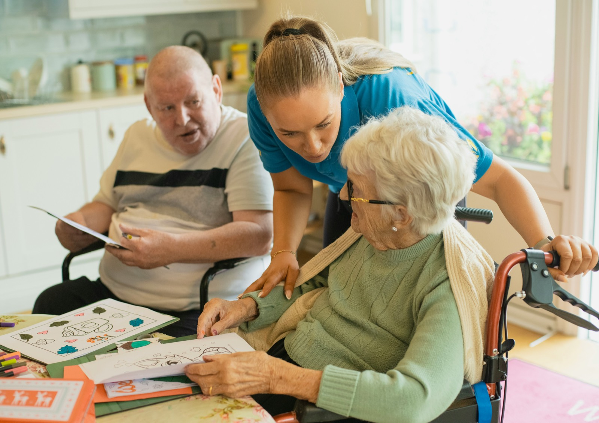

Non-medical in-home care in San Antonio
Care that lets them stay home.
Companionship, everyday help, and personal care, built around your loved one’s routines, dignity, and independence.
Trusted non-medical care in Central Texas
- Licensed by the Texas Health and Human Services Commission
- HCSSA License #024658
- Personal Assistance Services
How we can help
Eight ways we help at home.
Non-medical support, from a friendly visit to hands-on personal care.
What families can count on
Dependable Care
Consistent, professional, accountable, and clearly communicated.
Personalized Assistance
Built around each client’s routines, preferences, abilities, and schedule.
Respect & Dignity
Compassion, privacy, patience, and respect for independence.
Local Support
A San Antonio-based resource for the city and surrounding communities.
For families
Support for them. Breathing room for you.
Asking for support doesn’t mean stepping away. It means your loved one has dependable help and your family has room to rest, work, and simply be family.
- Respite when you need a few hours
- Help that works alongside your family
- Flexible, ongoing support as needs change

Getting started
You don’t need to know what care you need before calling.
Start with a conversation
Build a plan around your loved one
Begin care and adjust as needed
Where we serve
Based in San Antonio. Serving ten Texas counties.
- Atascosa County
- Bandera County
- Bexar County
- Comal County
- Gillespie County
- Guadalupe County
- Kendall County
- Kerr County
- Medina County
- Wilson County
Listing a county does not guarantee service at every address within it. Contact us and we will help confirm availability in your area.
Check your area
Join our team
Meaningful work, one person at a time.
Dependable people who show up, treat others with dignity, and build respectful relationships.
See caregiver careersYou don’t have to figure this out alone.
Tell us what is happening. We will walk through the options with you.